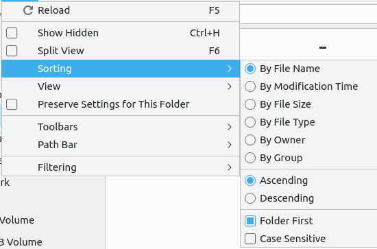

Chapter 5.5 Keyboard Menu Navigation¶
Denios-OS allows you to move through the menus of with only the keyboard instead of having to use the mouse. Looking at the menus there is an underlined with a letter. To open that menu with a for example the file menu in LibreOffice Writer can be opened with Alt + F. One other thing to notice is that with Alt + underlined character. The currently selected menu item will appear in a different color. If you want to see on your menu to have the menu shown hold down Alt and then press that key to see what it is to press.
Once you have the menu opened you can use the Up arrow and Down arrow keys to move up and down in a menu. Another way to move down in the menu is to press Tab key. If you want to move up in a different way press Shift+Tab. If the menu has ‣ to the right you can press Right arrow to expand into a submenu. To move back up a level from the menu press Left arrow. If you want to exit the menu press Escape. To move to adjacent menu to the left press :kbd:` Left arrow`. To move to an adjacent menu to the right press :kbd:` right arrow`. To activate an item on your menu press Enter. If you press the Down arrow or Tab keys at the bottom of the menu you will be taken back to the top of the menu.
If there is not a submenu available you can use Right arrow to move to the next menu to the right. If you are at the highest level of a menu press Left arrow to move to the menu to the left. To close a menu press the Escape key.
